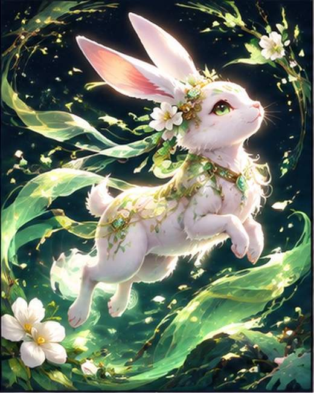

✦ DESTINY GARDEN 2027 ✦

바람의 정령
풀과 덩굴 · 나무의 수호신
생년월일을 공개하지 않는 수호신 소개 카드입니다. 캐릭터와 운세는 전통 상징을 소재로 한 창작 콘텐츠입니다.
나의 수호신 테스트하기✦ DESTINY GARDEN 2027 ✦

풀과 덩굴 · 나무의 수호신
생년월일을 공개하지 않는 수호신 소개 카드입니다. 캐릭터와 운세는 전통 상징을 소재로 한 창작 콘텐츠입니다.
나의 수호신 테스트하기